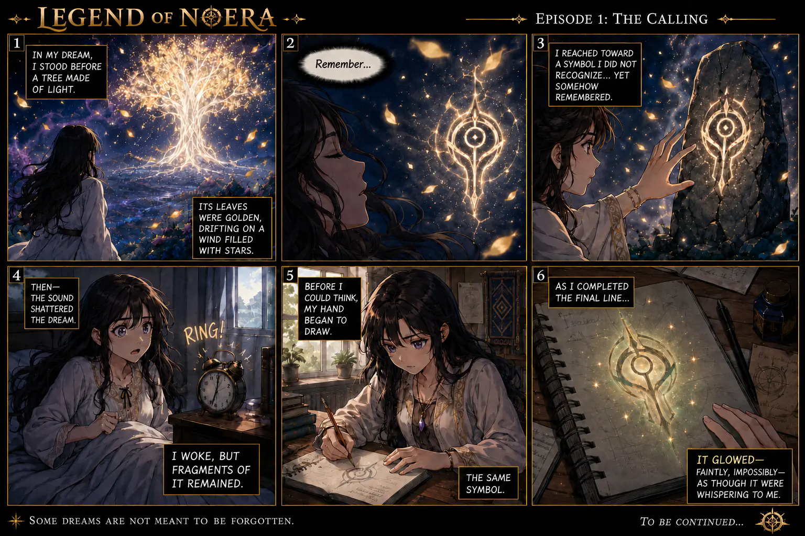
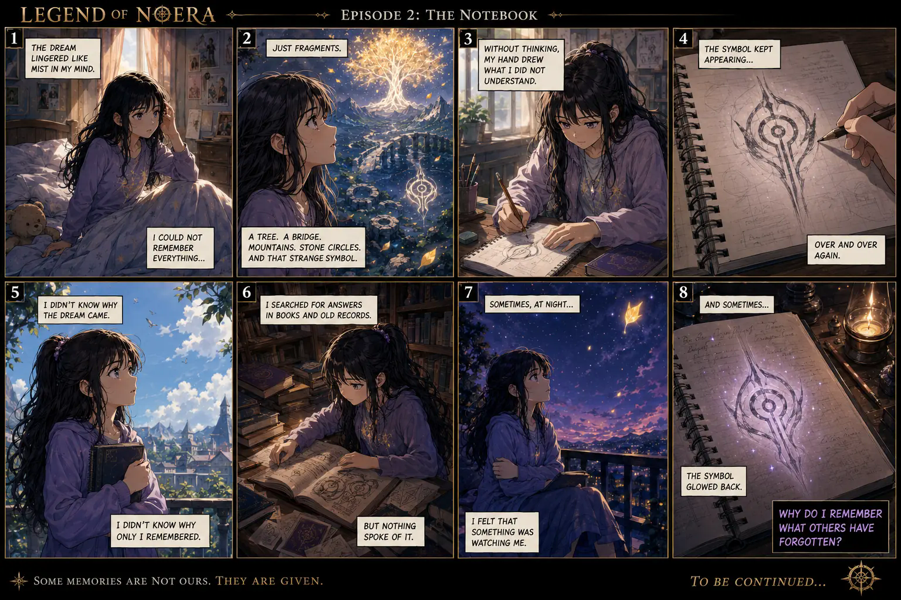

EPISODE 01
The Calling
A radiant tree. A forgotten symbol. A dream that refuses to disappear.

AN ILLUSTRATED JOURNEY
Follow Lady Zion through the dreams, fragments, and ancient memories that quietly draw her toward Zionara.
Begin Episode One ↓EPISODE 01
A radiant tree. A forgotten symbol. A dream that refuses to disappear.

The dream faded. The memory remained.
EPISODE 02
Lady Zion searches for answers while the mysterious symbol continues to call.

Open Full-Resolution PageTHE JOURNEY CONTINUES
Each new comic page will be added here as Lady Zion follows the Calling beyond the familiar world.
Read the Novel